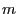
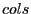
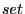

Next: C++ Attribute Examples Up: Attribute Examples Previous: Attribute Examples
Consider the case where you have a Gurobi model . You can retrieve the number of variables in the model by querying the NumVars model attribute. This is an integer-valued, scalar attribute, so you use GRBgetintattr:
int cols; error = GRBgetintattr(m, GRB_INT_ATTR_NUMVARS, &cols);You can also use the name of the attribute directly:
int cols; error = GRBgetintattr(m, "NumVars", &cols);(Note that attribute capitalization doesn't matter in the C interface, so you could also use
"numVars" or
"numvars").
If you've performed optimization on the model, the optimal objective value can be obtained by querying the ObjVal model attribute. This is a double-valued, scalar attribute, so you use GRBgetdblattr:
double objval; error = GRBgetdblattr(m, GRB_DBL_ATTR_OBJVAL, &objval);
If you'd like to query the value that a variable takes in the computed solution, you can query the X variable attribute. This is a double-valued, vector attribute, so you have a few options for querying the associated values. You can retrieve the value for a single variable using GRBgetdblattrelement:
double x0; error = GRBgetdblattrelement(m, GRB_DBL_ATTR_X, 0, &x0);(we query the solution value for variable 0 in this example). You can also query attribute values for multiple variables using GRBgetdblattrarray or GRBgetdblattrlist:
double x[]; error = GRBgetdblattrarray(m, GRB_DBL_ATTR_X, 0, cols, x);The former routine retrieves a contiguous set of values ( values, starting from index in our example). The latter allows you to provide a list of indices, and it returns the values for the corresponding entries.
For each attribute query routine, there's an analogous  routine. To set the upper bound of a variable, for example, you would use GRBsetdblattrelement:
error = GRBsetdblattrelement(m, GRB_DBL_ATTR_UB, 0, 0.0);(In this example, we've set the upper bound for variable 0 to 0). You can set attribute values for multiple variables in a single call using GRBsetdblattrarray or GRBsetdblattrlist.